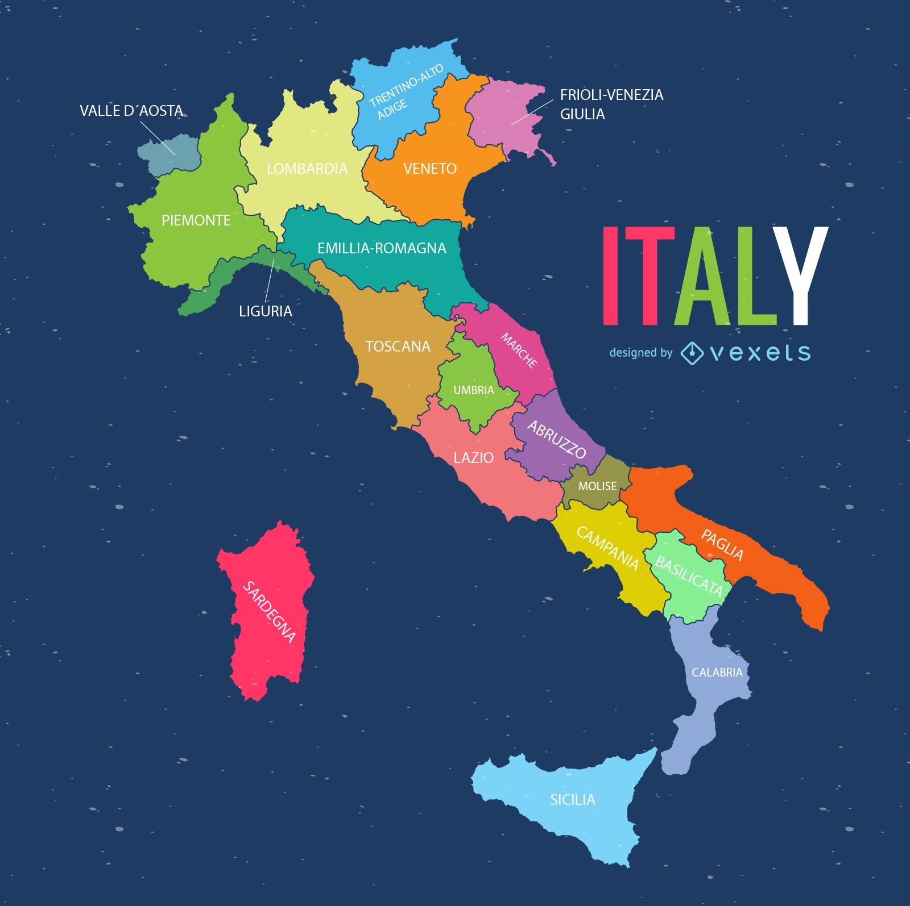
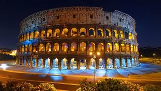
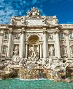
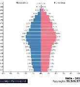
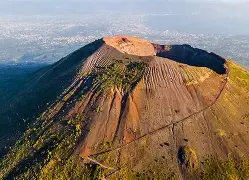
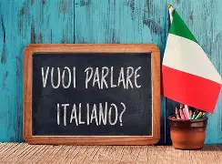
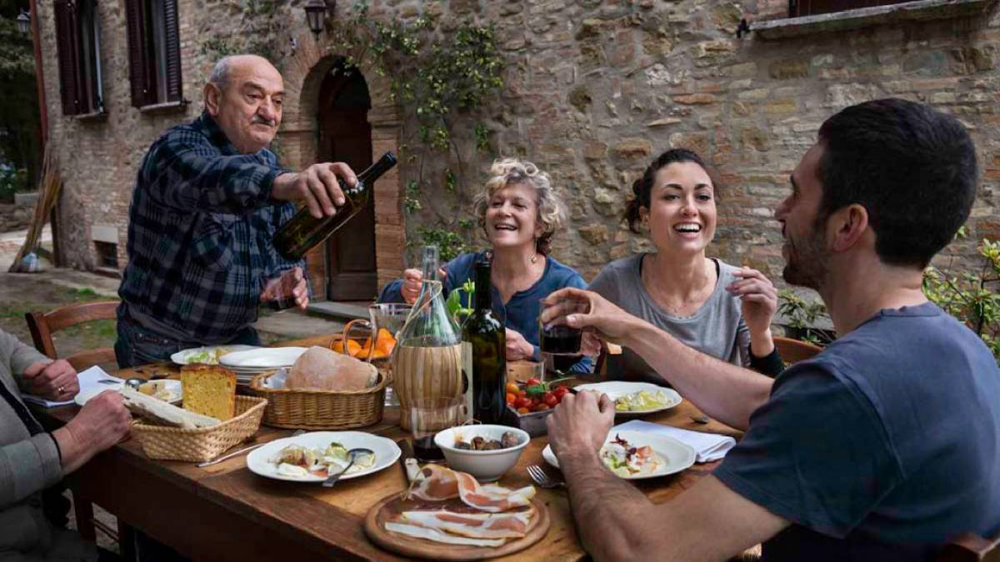
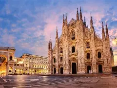
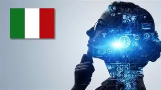

🗺️ Geografia
A Itália está localizada no sul da Europa, em formato de bota. Faz fronteira com França, Suíça, Áustria e Eslovênia. Seu clima é mediterrâneo e variado nas regiões montanhosas.
🏺 História
Berço do Império Romano, da Renascença e da unificação moderna em 1861. A Itália tem um dos legados históricos mais ricos da Europa.
📚 Português
Texto descritivo: "Andar pelas ruas de Roma é como voltar no tempo, onde cada esquina guarda histórias milenares e as pedras das calçadas parecem sussurrar segredos de civilizações passadas. É uma viagem poética entre arte, cultura e memória que envolve os sentidos."
📊 Matemática
População: mais de 59 milhões de habitantes. PIB: US$ 2 trilhões.
🔬 Ciências
A Itália possui diversos ecossistemas: dos Alpes ao Mar Mediterrâneo. Abriga vulcões como o Etna e o Vesúvio.
🎨 Artes
Terra de Michelangelo, Leonardo da Vinci e da arquitetura renascentista. A música italiana é conhecida pela ópera e canções folclóricas.

🏃 Educação Física
Futebol é o esporte mais popular. A Itália tem uma liga forte e já venceu quatro Copas do Mundo.
🌐 Inglês
- Hello – Ciao
- Thank you – Grazie
- Goodbye – Arrivederci
Curiosidade: o italiano é uma língua românica derivada do latim, com expressões que influenciaram o inglês moderno.
🧠 Filosofia/Sociologia
Valores culturais como família, tradição e arte são centrais na sociedade italiana.
💼 Economia
Setores importantes: moda (Milão), automóveis (Ferrari, Fiat), turismo e culinária. O vinho e o azeite de oliva são produtos de destaque.
💻 Tecnologia
A Itália investe em design industrial, automação e tecnologias sustentáveis. Cidades como Turim e Milão têm polos tecnológicos.
